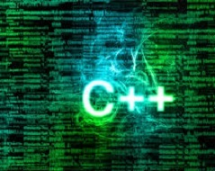
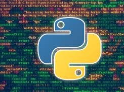
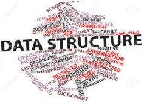
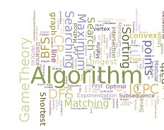
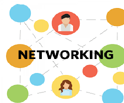
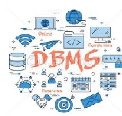

SKILLS
C is a computer programming language. That means that you can use C to create lists of instructions for a computer to follow. C is one of thousands of programming languages currently in use. C has been around for several decades and has won widespread acceptance because it gives programmers maximum control and efficiency. C is an easy language to learn. It is a bit more cryptic in its style than some other languages, but you get beyond that fairly quickly.

Definition - What does C++ Programming Language mean?
C++ is a general-purpose object-oriented programming (OOP) language, developed by Bjarne Stroustrup, and is an extension of the C language. It is therefore possible to code C++ in a "C style" or "object-oriented style." In certain scenarios, it can be coded in either way and is thus an effective example of a hybrid language.
C++ is considered to be an intermediate-level language, as it encapsulates both high- and low-level language features. Initially, the language was called "C with classes" as it had all the properties of the C language with an additional concept of "classes." However, it was renamed C++ in 1983.

Python is an interpreted, object-oriented, high-level programming language with dynamic semantics. Its high-level built in data structures, combined with dynamic typing and dynamic binding, make it very attractive for Rapid Application Development, as well as for use as a scripting or glue language to connect existing components together. Python's simple, easy to learn syntax emphasizes readability and therefore reduces the cost of program maintenance. Python supports modules and packages, which encourages program modularity and code reuse. The Python interpreter and the extensive standard library are available in source or binary form without charge for all major platforms, and can be freely distributed.

A data structure is a specialized format for organizing and storing data. General data structure types include the array, the file, the record, the table, the tree, and so on. Any data structure is designed to organize data to suit a specific purpose so that it can be accessed and worked with in appropriate ways. In computer programming, a data structure may be selected or designed to store data for the purpose of working on it with various algorithms.

An algorithm is a detailed series of instructions for carrying out an operation or solving a problem. In a non-technical approach, we use algorithms in everyday tasks, such as a recipe to bake a cake or a do-it-yourself handbook.
Technically, computers use algorithms to list the detailed instructions for carrying out an operation. For example, to compute an employee’s paycheck, the computer uses an algorithm. To accomplish this task, appropriate data must be entered into the system. In terms of efficiency, various algorithms are able to accomplish operations or problem solving easily and quickly.

Networking, also known as computer networking, is the practice of transporting and exchanging data between nodes over a shared medium in an information system. Networking comprises not only the design, construction and use of a network, but also the management, maintenance and operation of the network infrastructure, software and policies.
Computer networking enables devices and endpoints to be connected to each other on a local area network (LAN) or to a larger network, such as the internet or a private wide area network (WAN). This is an essential function for service providers, businesses and consumers worldwide to share resources, use or offer services, and communicate. Networking facilitates everything from telephone calls to text messaging to streaming video to the internet of things (IoT).

A database management system (DBMS) is system software for creating and managing databases. The DBMS provides users and programmers with a systematic way to create, retrieve, update and manage data.
A DBMS makes it possible for end users to create, read, update and delete data in a database. The DBMS essentially serves as an interface between the database and end users or application programs, ensuring that data is consistently organized and remains easily accessible.
The DBMS manages three important things: the data, the database engine that allows data to be accessed, locked and modified -- and the database schema, which defines the database’s logical structure. These three foundational elements help provide concurrency, security, data integrity and uniform administration procedures. Typical database administration tasks supported by the DBMS include change management, performance monitoring/tuning and backup and recovery. Many database management systems are also responsible for automated rollbacks, restarts and recovery as well as the logging and auditing of activity.
NON TECHINCAL SKILLS
German (Deutsch [dɔʏtʃ] (About this soundlisten)) is a West Germanic language that is mainly spoken in Central Europe. It is the most widely spoken and official or co-official language in Germany, Austria, Switzerland, South Tyrol (Italy), the German-speaking Community of Belgium, and Liechtenstein. It is also one of the three official languages of Luxembourg and a co-official language in the Opole Voivodeship in Poland. The languages which are most similar to German are the other members of the West Germanic language branch: Afrikaans, Dutch, English, the Frisian languages, Low German/Low Saxon, Luxembourgish, and Yiddish. There are also strong similarities in vocabulary with Danish, Norwegian and Swedish, although those belong to the North Germanic group. German is the second most widely spoken Germanic language, after English.
PROJECT
It is Book selling and Mangamnet software in CPP I which you can mange book in ,book out and purscahse of book and prinitng bill and may one....
If you want to downlaod the software click link given below.
LINK-
BOOK SELLING AND MANGAMENT SOFTWARE

Profitable App Profiles for the App Store and Google Play Markets
Collecting data for over four million apps requires a significant amount of time and money, so we'll try to analyze a sample of the data instead. To avoid spending resources on collecting new data ourselves, we should first try to see whether we can find any relevant existing data at no cost. Luckily, these are two data sets that seem suitable for our goals:
- A data set containing data about approximately ten thousand Android apps from Google Play — the data was collected in August 2018
- A data set containing data about approximately seven thousand iOS apps from the App Store — the data was collected in July 2017
LINK-
Profitable App Profiles for the App Store and Google Play Markets WORKING PROJECT
Comming Soon...